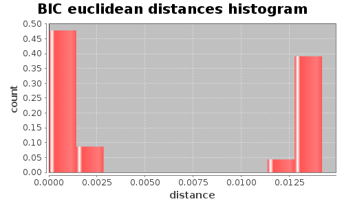
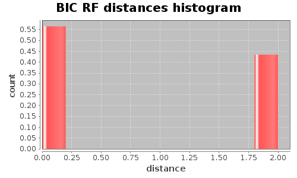

Application Meta
jModeltest 2.1
(c) 2011-onwards D. Darriba, G.L. Taboada, R. Doallo and D. Posada,(1) Department of Biochemistry, Genetics and Immunology
University of Vigo, 36310 Vigo, Spain.
(2) Department of Electronics and Systems
University of A Coruna, 15071 A Coruna, Spain.
e-mail: ddarriba@udc.es, dposada@uvigo.es
Thu Mar 20 15:26:19 EDT 2014
Linux 3.8.0-37-generic, arch: amd64, bits: 64, numcores: 8
| Citation: | Darriba D, Taboada GL, Doallo R and Posada D. 2012. "jModelTest 2: more models, new heuristics and parallel computing". Nature Methods 9, 772. |
 Back to top
Back to top Settings
Arguments = -s 3 -i -g 4 -f -BIC -tr 4 -d batchtest/gene1.phy -o testout/gene1.phyInput Alignment: "batchtest/gene1.phy"
NumTaxa = 6
Length = 631
Phyml version = 3.0
Phyml binary = PhyML_3.0_linux64
Candidate models = 24
number of substitution schemes = 3
including models with equal/unequal base frequencies (+F)
including models with/without a proportion of invariable sites (+I)
including models with/without rate variation among sites (+G) (nCat = 4)
Optimized free parameters (K) = Substitution parameters + 9 branch lengths + topology
Base tree for likelihood calculations = Maximum Likelihood
Tree topology search operation = NNI
Model Optimization Results
| ID | Name | Partition | -lnL | p | fA | fC | fG | fT | ti/tv | R(a) | R(b) | R(c) | R(d) | R(e) | R(f) | p-inv | shape |
|---|---|---|---|---|---|---|---|---|---|---|---|---|---|---|---|---|---|
| 1 | JC | 000000 | 1114.9771 | 10 | - | - | - | - | - | - | - | - | - | - | - | - | - |
| 2 | JC+I | 000000 | 1103.1105 | 11 | - | - | - | - | - | - | - | - | - | - | - | 0.9080 | - |
| 3 | JC+G | 000000 | 1106.4430 | 11 | - | - | - | - | - | - | - | - | - | - | - | - | 0.0230 |
| 4 | JC+I+G | 000000 | 1103.1101 | 12 | - | - | - | - | - | - | - | - | - | - | - | 0.6370 | 0.0180 |
| 5 | F81 | 000000 | 1064.9636 | 13 | 0.4203 | 0.1546 | 0.2022 | 0.2229 | - | - | - | - | - | - | - | - | - |
| 6 | F81+I | 000000 | 1053.5598 | 14 | 0.4199 | 0.1549 | 0.2022 | 0.2230 | - | - | - | - | - | - | - | 0.9020 | - |
| 7 | F81+G | 000000 | 1056.5452 | 14 | 0.4203 | 0.1547 | 0.2022 | 0.2229 | - | - | - | - | - | - | - | - | 0.0230 |
| 8 | F81+I+G | 000000 | 1053.5586 | 15 | 0.4199 | 0.1550 | 0.2022 | 0.2230 | - | - | - | - | - | - | - | 0.9030 | 8192.0000 |
| 9 | K80 | 010010 | 1114.5048 | 11 | - | - | - | - | 0.3460 | - | - | - | - | - | - | - | - |
| 10 | K80+I | 010010 | 1102.7023 | 12 | - | - | - | - | 0.3450 | - | - | - | - | - | - | 0.9070 | - |
| 11 | K80+G | 010010 | 1105.9890 | 12 | - | - | - | - | 0.3458 | - | - | - | - | - | - | - | 0.0230 |
| 12 | K80+I+G | 010010 | 1102.7020 | 13 | - | - | - | - | 0.3448 | - | - | - | - | - | - | 0.9070 | 8192.0000 |
| 13 | HKY | 010010 | 1064.4386 | 14 | 0.4204 | 0.1544 | 0.2031 | 0.2222 | 0.3457 | - | - | - | - | - | - | - | - |
| 14 | HKY+I | 010010 | 1053.0860 | 15 | 0.4200 | 0.1547 | 0.2030 | 0.2224 | 0.3398 | - | - | - | - | - | - | 0.9020 | - |
| 15 | HKY+G | 010010 | 1056.0320 | 15 | 0.4204 | 0.1544 | 0.2030 | 0.2222 | 0.3434 | - | - | - | - | - | - | - | 0.0230 |
| 16 | HKY+I+G | 010010 | 1053.0846 | 16 | 0.4200 | 0.1547 | 0.2030 | 0.2224 | 0.3398 | - | - | - | - | - | - | 0.6100 | 0.0140 |
| 17 | SYM | 012345 | 1114.4117 | 15 | - | - | - | - | - | 0.8648 | 0.5631 | 0.8707 | 1.0077 | 0.7608 | 1.0000 | - | - |
| 18 | SYM+I | 012345 | 1102.5298 | 16 | - | - | - | - | - | 1.3420 | 0.7184 | 1.1162 | 1.1632 | 0.9348 | 1.0000 | 0.9080 | - |
| 19 | SYM+G | 012345 | 1105.9643 | 16 | - | - | - | - | - | 0.8887 | 0.5695 | 0.8805 | 0.9937 | 0.7589 | 1.0000 | - | 0.0230 |
| 20 | SYM+I+G | 012345 | 1102.5301 | 17 | - | - | - | - | - | 1.3414 | 0.7183 | 1.1159 | 1.1636 | 0.9348 | 1.0000 | 0.9070 | 8192.0000 |
| 21 | GTR | 012345 | 1063.1655 | 18 | 0.4234 | 0.1521 | 0.2022 | 0.2223 | - | 0.8231 | 0.4362 | 0.6326 | 1.2291 | 0.8935 | 1.0000 | - | - |
| 22 | GTR+I | 012345 | 1051.8400 | 19 | 0.4234 | 0.1520 | 0.2022 | 0.2224 | - | 0.8716 | 0.4157 | 0.6056 | 1.2520 | 0.9485 | 1.0000 | 0.8990 | - |
| 23 | GTR+G | 012345 | 1054.7202 | 19 | 0.4236 | 0.1519 | 0.2022 | 0.2223 | - | 0.8367 | 0.4257 | 0.6177 | 1.2472 | 0.9174 | 1.0000 | - | 0.0230 |
| 24 | GTR+I+G | 012345 | 1051.8390 | 20 | 0.4234 | 0.1520 | 0.2022 | 0.2224 | - | 0.8720 | 0.4153 | 0.6049 | 1.2523 | 0.9487 | 1.0000 | 0.6000 | 0.0150 |
There are 2 different topologies. The following table shows the models supporting each topology and the rank according to each Information Criterion, as well as Robinson-Foulds and Euclidean distances with the tree of the best-fit model.
| ID | Models | Topology | AIC | BIC | AICc | DT | |
|---|---|---|---|---|---|---|---|
| 0 |
JC JC+I JC+G JC+I+G F81+I F81+I+G K80 K80+I K80+G K80+I+G HKY+I HKY+I+G SYM+I SYM+I+G
|
RANK | - | 0 | - | - | |
| Weight | - | 0.9533 | - | - | |||
| RF | - | 0 | - | - | |||
| AVG Distance | - | 1.0665e-03 | - | - | |||
| Distance VAR | - | 5.9429e-07 | - | - | |||
| 1 |
F81 F81+G HKY HKY+G SYM SYM+G GTR GTR+I GTR+G GTR+I+G
|
RANK | - | 1 | - | - | |
| Weight | - | 0.0467 | - | - | |||
| RF | - | 2 | - | - | |||
| AVG Distance | - | 1.3771e-02 | - | - | |||
| Distance VAR | - | 5.6713e-07 | - | - |
BIC Selection Results
Model selected
| Model | F81+I | ||
|---|---|---|---|
| partition | 000000 | ||
| -lnL | 1053.5598 | ||
| K | 14 | ||
| freqA | 0.4199 | R(a) | - |
| freqC | 0.1549 | R(b) | - |
| freqG | 0.2022 | R(c) | - |
| freqT | 0.2230 | R(d) | - |
| ti/tv | - | R(e) | - |
| R(f) | - | ||
| p-inv | 0.9020 | gamma | - |
Best model tree
(P2:0.00506738,P3:0.01614560,((P1:0.00000001,P6:0.00680332):0.00205699,(P5:0.01021676,P4:0.00720751):0.00151155):0.01258351);
Display best model tree in PhyloWidget
| Model | -lnL | K | BIC | delta | weight | cumWeight |
|---|---|---|---|---|---|---|
| F81+I | 1053.5598 | 14 | 2197.3818 | 0.0000 | 0.8617 | 0.8617 |
| HKY+I | 1053.0860 | 15 | 2202.8815 | 5.4997 | 0.0551 | 0.9168 |
| F81+G | 1056.5452 | 14 | 2203.3527 | 5.9709 | 0.0435 | 0.9603 |
| F81+I+G | 1053.5586 | 15 | 2203.8267 | 6.4449 | 0.0343 | 0.9947 |
| HKY+G | 1056.0320 | 15 | 2208.7736 | 11.3918 | 0.0029 | 0.9975 |
| HKY+I+G | 1053.0846 | 16 | 2209.3261 | 11.9443 | 0.0022 | 0.9997 |
| F81 | 1064.9636 | 13 | 2213.7422 | 16.3604 | 0.0002 | 1.0000 |
| HKY | 1064.4386 | 14 | 2219.1395 | 21.7577 | 0.0000 | 1.0000 |
| GTR+I | 1051.8400 | 19 | 2226.1787 | 28.7969 | 0.0000 | 1.0000 |
| GTR+G | 1054.7202 | 19 | 2231.9392 | 34.5574 | 0.0000 | 1.0000 |
| GTR+I+G | 1051.8390 | 20 | 2232.6242 | 35.2424 | 0.0000 | 1.0000 |
| GTR | 1063.1655 | 18 | 2242.3825 | 45.0007 | 0.0000 | 1.0000 |
| JC+I | 1103.1105 | 11 | 2277.1413 | 79.7595 | 0.0000 | 1.0000 |
| K80+I | 1102.7023 | 12 | 2282.7722 | 85.3904 | 0.0000 | 1.0000 |
| JC+I+G | 1103.1101 | 12 | 2283.5878 | 86.2060 | 0.0000 | 1.0000 |
| JC+G | 1106.4430 | 11 | 2283.8064 | 86.4246 | 0.0000 | 1.0000 |
| K80+I+G | 1102.7020 | 13 | 2289.2189 | 91.8372 | 0.0000 | 1.0000 |
| K80+G | 1105.9890 | 12 | 2289.3456 | 91.9638 | 0.0000 | 1.0000 |
| JC | 1114.9771 | 10 | 2294.4273 | 97.0455 | 0.0000 | 1.0000 |
| K80 | 1114.5048 | 11 | 2299.9300 | 102.5482 | 0.0000 | 1.0000 |
| SYM+I | 1102.5298 | 16 | 2308.2165 | 110.8348 | 0.0000 | 1.0000 |
| SYM+I+G | 1102.5301 | 17 | 2314.6643 | 117.2826 | 0.0000 | 1.0000 |
| SYM+G | 1105.9643 | 16 | 2315.0855 | 117.7038 | 0.0000 | 1.0000 |
| SYM | 1114.4117 | 15 | 2325.5329 | 128.1511 | 0.0000 | 1.0000 |
| -lnL: | negative log likelihod |
| K: | number of estimated parameters |
| BIC: | Bayesian Information Criterion |
| delta: | BIC difference |
| weight: | BIC weight |
| cumWeight: | cumulative BIC weight |
Confidence interval
There are 24 models in the 100.00% confidence interval:
F81+I HKY+I F81+G F81+I+G HKY+G HKY+I+G F81 HKY GTR+I GTR+G GTR+I+G GTR JC+I K80+I JC+I+G JC+G K80+I+G K80+G JC K80 SYM+I SYM+I+G SYM+G SYM

Euclidean distances histogram from each model optimized tree to F81+I tree.
Euclidean distances histogram from each model optimized tree to F81+I tree.

Robinson-Foulds distances histogram from the different topologies to F81+I topology.
Robinson-Foulds distances histogram from the different topologies to F81+I topology.